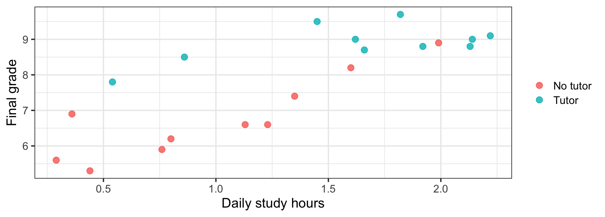
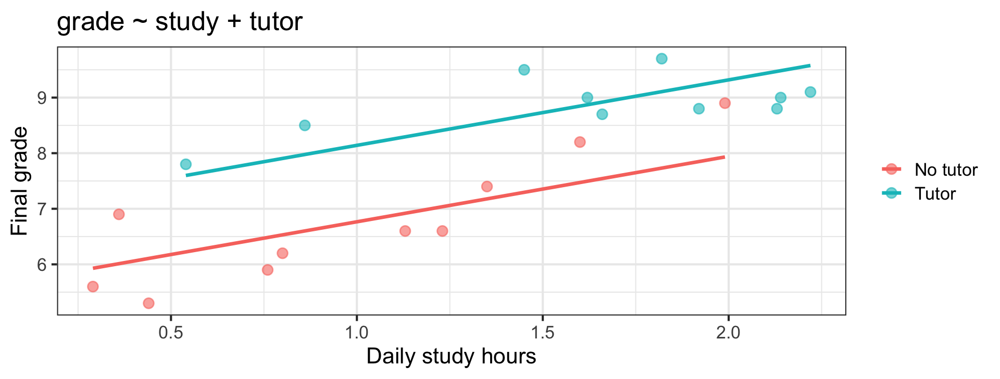
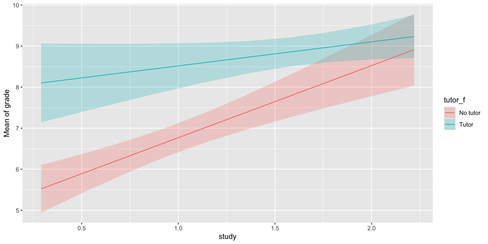
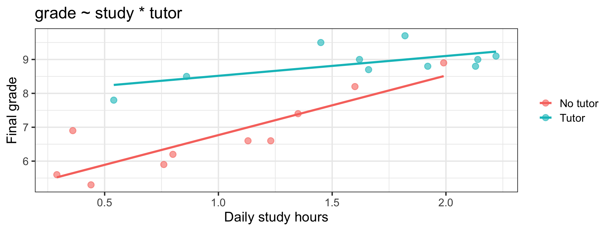
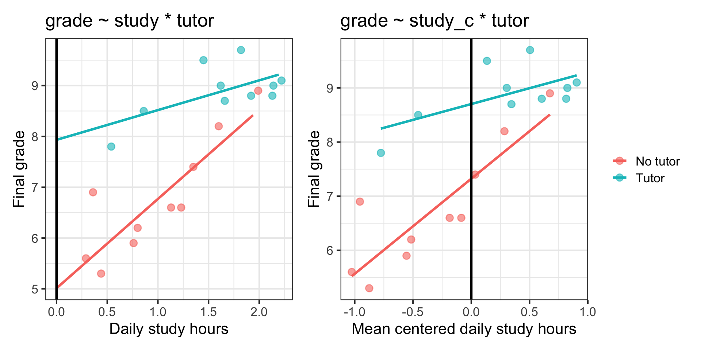
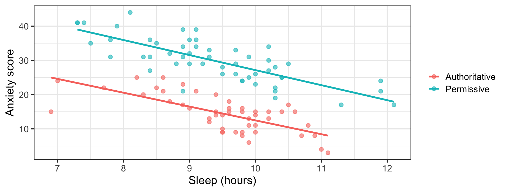

Week 09: Multiple Regression II
Date: October 22, 2026
Today…
Groups meet predictors.
- A group and a continuous predictor in the same model
- Two lines, same slope: what “controlling for” looks like on a plot
- What if the slope is different for each group? (interactions)
- Simple slopes: the only honest way to report one
- Why centering suddenly matters
- An interaction that isn’t there — and what to do about it
Two threads, now braided
Week 6
A group is a predictor. Dummy-code it, and the intercept is the reference group’s mean.
Week 8
Put two predictors in one model and each coefficient becomes a holding-constant comparison.
This week: a model with both kinds of predictor in it, and then the question neither week could ask —
Is the slope the same for every group?
Part 1: Group + Continuous
20 students, two things we know about them 🎓
Daily study hours, final grade (on a 10-point scale), and whether the student worked with a tutor.
tutor <- import(here("files", "data", "tutor.csv")) %>%
mutate(tutor_f = factor(tutor, levels = c(0, 1),
labels = c("No tutor", "Tutor")))
tutor %>%
group_by(tutor_f) %>%
summarize(n = n(),
study_m = mean(study), study_sd = sd(study),
grade_m = mean(grade), grade_sd = sd(grade)) %>%
mutate(across(where(is.numeric), ~ round(.x, 3)))# A tibble: 2 × 6
tutor_f n study_m study_sd grade_m grade_sd
<fct> <dbl> <dbl> <dbl> <dbl> <dbl>
1 No tutor 10 0.995 0.563 6.76 1.14
2 Tutor 10 1.64 0.557 8.89 0.526Two separate stories
# A tibble: 2 × 5
term estimate std.error statistic p.value
<chr> <dbl> <dbl> <dbl> <dbl>
1 (Intercept) 5.52 0.450 12.3 3.46e-10
2 study 1.75 0.309 5.66 2.27e- 5# A tibble: 2 × 5
term estimate std.error statistic p.value
<chr> <dbl> <dbl> <dbl> <dbl>
1 (Intercept) 6.76 0.280 24.1 3.75e-15
2 tutor_fTutor 2.13 0.397 5.37 4.19e- 5- Study: each extra hour → +1.75 grade points, \(R^2\) = .640
- Tutor: tutored students score +2.13 higher, \(R^2\) = .616
Two strong, significant, nearly equally powerful predictors. Should we just add them up?
Look first 👀

Notice where the tutored students sit on the x-axis. They also study more (1.64 vs 0.99 hours). The two predictors are entangled: r = .52.
Both at once
Call:
lm(formula = grade ~ study + tutor_f, data = tutor)
Residuals:
Min 1Q Median 3Q Max
-0.8064 -0.4470 -0.2686 0.5413 0.9681
Coefficients:
Estimate Std. Error t value Pr(>|t|)
(Intercept) 5.5882 0.3198 17.474 0.00000000000269 ***
study 1.1777 0.2565 4.592 0.000259 ***
tutor_fTutor 1.3751 0.3183 4.320 0.000465 ***
---
Signif. codes: 0 '***' 0.001 '**' 0.01 '*' 0.05 '.' 0.1 ' ' 1
Residual standard error: 0.6096 on 17 degrees of freedom
Multiple R-squared: 0.8285, Adjusted R-squared: 0.8083
F-statistic: 41.07 on 2 and 17 DF, p-value: 0.0000003096# A tibble: 1 × 3
r.squared adj.r.squared sigma
<dbl> <dbl> <dbl>
1 0.829 0.808 0.610| Predictor | Alone | Together | Change |
|---|---|---|---|
study |
1.750 | 1.178 | −33% |
tutor_f |
2.130 | 1.375 | −35% |
\(R^2\): .640 → .829
Both effects shrank. Both are still real.
- Part of “the tutoring effect” was that tutored students study more
- Part of “the studying effect” was that heavy studiers were more likely to have a tutor
- Hold one still and each one keeps only the part that is its own
Important
Shrinkage is not failure. The bivariate numbers were double-counting shared credit. These are the honest ones — and both survive: p = .0003 and p = .0005.
What the model looks like
\[\widehat{Grade} = 5.588 + 1.178(Study) + 1.375(Tutor)\]
Tutoris 0 or 1, so this is two lines- No tutor: \(\widehat{Grade} = 5.588 + 1.178(Study)\)
- Tutor: \(\widehat{Grade} = (5.588 + 1.375) +1.178(Study)\)
Same slope. Different intercept. The model has assumed that tutoring shifts the line up without changing its steepness.
Parallel lines, by construction
Code

The gap between the lines is 1.375 at every value of study. That is not something we found. It is something we imposed.
Did the group earn its place?
Analysis of Variance Table
Model 1: grade ~ study
Model 2: grade ~ study + tutor_f
Res.Df RSS Df Sum of Sq F Pr(>F)
1 18 13.2498
2 17 6.3168 1 6.933 18.658 0.000465 ***
---
Signif. codes: 0 '***' 0.001 '**' 0.01 '*' 0.05 '.' 0.1 ' ' 1- \(\Delta R^2\) = .829 − .640 = .188
- \(F\)(1, 17) = 18.66, p = .0005
- Typical miss: 0.858 → 0.610 grade points
Tip
This is exactly the midterm’s Part 6 table. One continuous predictor, one categorical predictor, one model with both, and the comparison between them.
💻 Your Turn - Part 1
Part 2: What If The Slopes Differ?
The assumption we never checked
Parallel lines say: tutoring helps every student by the same amount, no matter how much they study.
Is that plausible?
- Maybe tutoring mostly helps students who are not putting in hours
- Maybe tutoring compounds — it helps most the students who already study
- Maybe it really is a constant boost
We can test it. All it takes is one more term.
The interaction term
\[Y = b_0 + b_1X + b_2D + b_3(X \times D) + e\]
Call:
lm(formula = grade ~ study * tutor_f, data = tutor)
Residuals:
Min 1Q Median 3Q Max
-0.5728 -0.3837 -0.1584 0.1838 1.2555
Coefficients:
Estimate Std. Error t value Pr(>|t|)
(Intercept) 5.0121 0.3496 14.337 0.00000000015 ***
study 1.7567 0.3095 5.676 0.00003443132 ***
tutor_fTutor 2.9203 0.6418 4.550 0.000328 ***
study:tutor_fTutor -1.1713 0.4402 -2.661 0.017093 *
---
Signif. codes: 0 '***' 0.001 '**' 0.01 '*' 0.05 '.' 0.1 ' ' 1
Residual standard error: 0.5232 on 16 degrees of freedom
Multiple R-squared: 0.8811, Adjusted R-squared: 0.8588
F-statistic: 39.53 on 3 and 16 DF, p-value: 0.0000001259study * tutor_f in R expands to study + tutor_f + study:tutor_f. Never fit the product without both main effects.
The interaction term
| grade | grade | |||||
|---|---|---|---|---|---|---|
| Predictors | Estimates | CI | p | Estimates | CI | p |
| (Intercept) | 5.59 | 4.91 – 6.26 | <0.001 | 5.01 | 4.27 – 5.75 | <0.001 |
| study | 1.18 | 0.64 – 1.72 | <0.001 | 1.76 | 1.10 – 2.41 | <0.001 |
| tutor f [Tutor] | 1.38 | 0.70 – 2.05 | <0.001 | 2.92 | 1.56 – 4.28 | <0.001 |
| study × tutor f [Tutor] | -1.17 | -2.10 – -0.24 | 0.017 | |||
| Observations | 20 | 20 | ||||
| R2 / R2 adjusted | 0.829 / 0.808 | 0.881 / 0.859 | ||||
Reading the interaction
| Term | b | p | What it is |
|---|---|---|---|
| intercept | \(b_0\) 5.012 | < .001 | grade for no tutor, study = 0 |
study |
\(b_1\) 1.757 | < .001 | slope for the reference group (no tutor) |
tutor_f |
\(b_2\) 2.920 | .0003 | group gap at study = 0 (intercept difference) |
study:tutor_f |
\(b_3\) −1.171 | .017 | how much the slope changes for tutored students |
Important
Once there is an interaction in the model, study is no longer “the” effect of studying. It is the effect of studying for the group coded 0.
Simple slopes
No tutor
\(b_1 = 1.757\)
Each extra hour → +1.76 points
Tutor
\(b_1 + b_3 = 1.757 - 1.171\)
Each extra hour → +0.59 points
[1] 1.756707[1] 0.5853662Three times steeper without a tutor. Report simple slopes — the raw coefficients mean almost nothing on their own.
Simple Slopes modelbased
https://easystats.github.io/modelbased/articles/introduction_comparisons_3.html
Estimated Marginal Effects
tutor_f | Slope | SE | 95% CI | t(16) | p
--------------------------------------------------------
No tutor | 1.76 | 0.31 | [ 1.10, 2.41] | 5.68 | < .001
Tutor | 0.59 | 0.31 | [-0.08, 1.25] | 1.87 | 0.080
Marginal effects estimated for study
Type of slope was dY/dX
Now the picture makes sense

The lines converge. Tutoring buys a lot for a student studying half an hour a day, and nearly nothing for one studying two hours.
Say it in words
An interaction is always symmetric. Both of these are the same finding:
- The benefit of tutoring depends on how much a student studies
- The payoff of studying depends on whether a student has a tutor
Tip
Pick the direction that answers your research question, say it in one sentence, then show the plot. A reader will believe the plot before they believe the coefficient.
Did the interaction earn its place?
Analysis of Variance Table
Model 1: grade ~ study + tutor_f
Model 2: grade ~ study * tutor_f
Res.Df RSS Df Sum of Sq F Pr(>F)
1 17 6.3168
2 16 4.3792 1 1.9376 7.0791 0.01709 *
---
Signif. codes: 0 '***' 0.001 '**' 0.01 '*' 0.05 '.' 0.1 ' ' 1| Model | \(R^2\) | adj. \(R^2\) | RSE |
|---|---|---|---|
| additive | .8285 | .8083 | 0.610 |
| + interaction | .8811 | .8588 | 0.523 |
\(\Delta R^2\) = .053, \(F\)(1, 16) = 7.08, p = .017. Adjusted \(R^2\) rose. Keep it.
⚠️ Centering is no longer optional
In the interaction model, tutor_f = 2.92 was the group gap at study = 0 — a student who studies zero hours a day. This doesn’t exist. It is purely extrapolation.
# A tibble: 4 × 5
term estimate std.error statistic p.value
<chr> <dbl> <dbl> <dbl> <dbl>
1 (Intercept) 7.32 0.193 38.0 4.17e-17
2 study_c 1.76 0.310 5.68 3.44e- 5
3 tutor_fTutor 1.38 0.273 5.05 1.19e- 4
4 study_c:tutor_fTutor -1.17 0.440 -2.66 1.71e- 2- Mean
study= 1.316 hours - Group gap at the mean: 1.379, not 2.92
study_cslope and the interaction: identical — centering did not change the model, only where we read it
Why that matters
Important
Centering a predictor moves the intercept and the other variable’s main effect to a meaningful place. It does not change the interaction, the fit, or the p-value for the interaction.
In a model with an interaction, always center your continuous predictor — or be ready to explain what X = 0 means.

Part 3: When It Isn’t There
100 children, sleep, and parenting 😴
Anxiety scores for 100 children, with hours of sleep and whether parenting was rated Authoritative or Permissive.
kids <- import(here("files", "data", "child_wellbeing.csv")) %>%
mutate(ps = factor(parenting_style,
levels = c("Authoritative", "Permissive")))
kids %>%
group_by(ps) %>%
summarise(n = n(),
sleep_m = mean(sleep_hours),
anx_m = mean(anxiety_score), anx_sd = sd(anxiety_score)) %>%
mutate(across(where(is.numeric), ~ round(.x, 3)))# A tibble: 2 × 5
ps n sleep_m anx_m anx_sd
<fct> <dbl> <dbl> <dbl> <dbl>
1 Authoritative 47 9.51 14.4 5.42
2 Permissive 53 9.36 30.0 6.46Build it up
# A tibble: 2 × 5
term estimate std.error statistic p.value
<chr> <dbl> <dbl> <dbl> <dbl>
1 (Intercept) 67.8 7.79 8.70 8.17e-14
2 sleep_hours -4.78 0.822 -5.82 7.40e- 8# A tibble: 1 × 12
r.squared adj.r.squared sigma statistic p.value df logLik AIC BIC
<dbl> <dbl> <dbl> <dbl> <dbl> <dbl> <dbl> <dbl> <dbl>
1 0.257 0.249 8.50 33.9 0.0000000740 1 -355. 716. 723.
# ℹ 3 more variables: deviance <dbl>, df.residual <int>, nobs <int># A tibble: 3 × 5
term estimate std.error statistic p.value
<chr> <dbl> <dbl> <dbl> <dbl>
1 (Intercept) 55.0 3.78 14.5 4.09e-26
2 sleep_hours -4.26 0.393 -10.9 1.92e-18
3 psPermissive 14.9 0.813 18.3 3.33e-33# A tibble: 1 × 12
r.squared adj.r.squared sigma statistic p.value df logLik AIC BIC
<dbl> <dbl> <dbl> <dbl> <dbl> <dbl> <dbl> <dbl> <dbl>
1 0.833 0.830 4.05 242. 2.02e-38 2 -280. 568. 579.
# ℹ 3 more variables: deviance <dbl>, df.residual <int>, nobs <int>- Sleep alone: −4.78 per hour, \(R^2\) = .257
- With parenting: −4.26 per hour; permissive +14.88; \(R^2\) = .833
Note what did not happen
The sleep slope moved from −4.78 to −4.26 — a small shrink.
# A tibble: 2 × 2
ps mean_sleep
<fct> <dbl>
1 Authoritative 9.51
2 Permissive 9.36The two groups sleep almost identically (9.51 vs 9.36 hours). With the predictors nearly unrelated, parenting had almost nothing to take back from sleep — it just explained a huge amount of new variance.
Test the interaction anyway
# A tibble: 4 × 5
term estimate std.error statistic p.value
<chr> <dbl> <dbl> <dbl> <dbl>
1 (Intercept) 52.9 6.17 8.57 1.71e-13
2 sleep_hours -4.04 0.645 -6.26 1.08e- 8
3 psPermissive 18.2 7.75 2.35 2.08e- 2
4 sleep_hours:psPermissive -0.353 0.815 -0.434 6.66e- 1# A tibble: 1 × 12
r.squared adj.r.squared sigma statistic p.value df logLik AIC BIC
<dbl> <dbl> <dbl> <dbl> <dbl> <dbl> <dbl> <dbl> <dbl>
1 0.833 0.828 4.07 160. 3.24e-37 3 -280. 570. 583.
# ℹ 3 more variables: deviance <dbl>, df.residual <int>, nobs <int>sleep_hours:psPermissive = −0.353, p = .666.
The fit table tells the story
| Model | \(R^2\) | adj. \(R^2\) | RSE |
|---|---|---|---|
| additive | .8330 | .8295 | 4.048 |
| + interaction | .8333 | .8281 ⬇️ | 4.066 ⬆️ |
Analysis of Variance Table
Model 1: anxiety_score ~ sleep_hours + ps
Model 2: anxiety_score ~ sleep_hours * ps
Res.Df RSS Df Sum of Sq F Pr(>F)
1 97 1589.8
2 96 1586.7 1 3.1077 0.188 0.6655\(\Delta R^2\) = .0003, \(F\)(1, 96) = 0.19, p = .666. Adjusted \(R^2\) went down.
Parallel lines — this time earned

Two lines, essentially the same slope, clearly different heights. Sleep matters the same amount in both groups; the groups just start in different places.
The discipline
- Fit the interaction if you have a reason to expect one
- Test it
- If it is not there, report that and interpret the additive model
- Do not keep an interaction you cannot defend just because it was your idea
Warning
A non-significant interaction is not evidence that the slopes are identical — especially with small groups, where you have very little power to detect a difference in slopes. “We found no evidence of moderation” ≠ “there is no moderation.”
The write-up: interaction present
Final grade was regressed on daily study hours (centered), tutoring status, and their interaction (N = 20). The full model accounted for 88.1% of the variance in grades, F(3, 16) = 39.53, p < .001. The interaction was significant, b = −1.17, SE = 0.44, t(16) = −2.66, p = .017, ΔR² = .053. Simple slopes indicated that each additional hour of daily study was associated with a 1.76-point increase in grade for students without a tutor, but only a 0.59-point increase for students with a tutor. At the mean level of study, tutored students scored 1.38 points higher than untutored students (p < .001).
The write-up: interaction absent
Anxiety was regressed on hours of sleep and parenting style (N = 100). The additive model accounted for 83.3% of the variance, F(2, 97) = 241.87, p < .001. Each additional hour of sleep was associated with a 4.26-point decrease in anxiety, holding parenting style constant (p < .001), and children with permissive parenting scored 14.88 points higher than those with authoritative parenting, holding sleep constant (p < .001). A sleep × parenting interaction was tested and was not supported, b = −0.35, p = .666, ΔR² = .0003; the additive model is therefore reported.
Tip
Report that you tested it. A reader who cannot tell whether you looked will assume you looked and did not like the answer.
For next time
📂 Midterm Project — due Tuesday 10/27 at 11:59pm
Five days. If Part 6 is not drafted by this weekend, it will not be good by Tuesday.
You are not required to include an interaction. If you fit one, test it and report the test either way.
📖 Chapter 11 — ROS · Chapter 12.1 — ST (assumptions and diagnostics)
Next week: everything we have been glancing at on residual plots becomes a named assumption with an actual test.